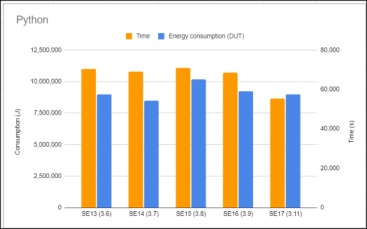
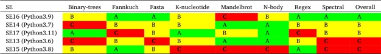

12% of energy used by the U.S will be for Artificial Intelligence (AI) in 2028. Attention has been drawn to AI for its environmental impacts, especially for heavy energy consumption. Asking ChatGPT a single question requires as much power as to charge your phone for nearly an hour! While there are many reasons for its exorbitant consumption, the energy to process AI's code is a sneaky perpetrator.
To understand the power consumption of AI, we need to understand what a programming language is. A programming language is a lot like human languages, but instead it is a conversation between a person and a computer. Like our languages, there are more than one, and while each can tell the computer to perform different actions, the one most commonly used for AI is a language called Python. AI companies use this language to speak to their computer because it manages lots of data very quickly, which is essential for AI to give responses in mere seconds. Since it is much easier to use than most other programming languages, it also takes a lot less time to develop the AI. However, processing all of this Python code requires lots of energy. The amount of energy that Python consumes is much higher than you might expect.
How someone uses Python code to communicate to a computer is different from other programming languages. When people speak a different language, they use a translator to take everything said in one language, and then convert it to the other language once they finish speaking. This is the same process with computers, which use translators, called compilers, to translate code into 1s and 0s, or binary code, so the computer can understand the programmer. Most languages use these, but Python uses a different form of translation altogether, called an interpreter. Interpreters are translators that translate for you while you are speaking, saying what you want in real time. This can be faster to understand, but takes more energy to do. This reflects Python code, which is more speedy, but still requires a lot of processing power needed in order to convert its code.
To further illustrate the energy expense of Python, a study on the energy consumption of many compilers and interpreters ran a test to illustrate the large amounts of energy usage from interpreted code into binary code. It ran several algorithms, such as Regular Expression (RegEx), which finds patterns in a string of text, like how ChatGPT finds keywords to your search and provides an answer. The study ran the code into the interpreter, then repeated this process for different Python interpreter versions. The study concluded that "energy efficiency does not seem to be a major factor when developing compilers/interpreters and should therefore be prioritized" (Jimenez et al., 2025).


Fig. 1 indicates major power consumption from each interpreter version. Python already has 20 times the amount of power consumption as another language, Java (Jimenez et al., 2025). However, the power consumption, even with the most energy efficient interpreter, is baffling. The interpreter, SE17, produced 8 million joules of energy after running all of the algorithms. For comparison, that amount of power is enough to power a microwave for over two hours (Jimenez et al., 2025).
Fig. 2 shows the energy it takes to run different algorithms on different versions. According to the graph, the most recent version, SE17 has a B grade overall, showing that it consumes a lot more power to run several algorithms than its last iteration, SE16, which is the only interpreter which has an overall A rating on the chart. However, every program earned at least one C grade on one of their algorithms, showing that each interpreter has the capacity to use a lot of energy.
The brainpower of a translator, even after years of iteration to optimize its efficiency, proves itself as a substantial factor of the energy consumption of many applications like AI. Therefore, as developers update programming translators, decreasing energy consumption is essential to lowering the climate impacts of their heavy applications.
Works Cited
Jimenez, E., Gordillo, A., Calero, C., Moraga, M. A., & Garcia, F. (2025). Does the compiler or interpreter version influence the energy consumption of programming languages? Science of Computer Programming, 243, 103270. https://doi.org/10.1016/j.scico.2025.103270